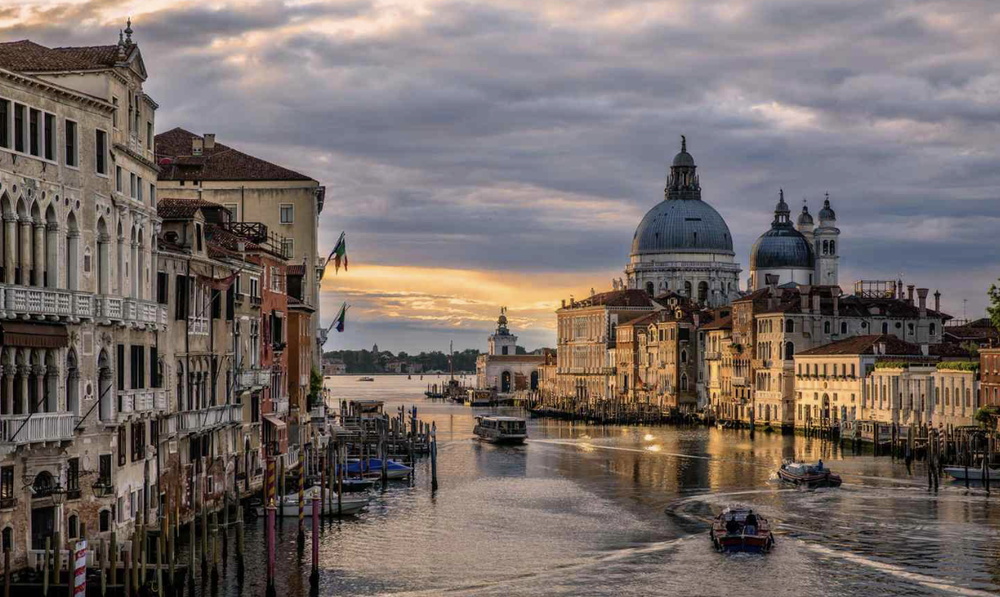

Yellowstone
Check out the Yellowstone National Park!


Yellowstone National Park sits on top of a dormant volcano and is home to more geysers and hot springs than any other place on earth. Wonders abound at this truly unique national park, from sites like the Yellowstone Grand Canyon to wildlife like America's largest buffalo herd, grizzly bears, and wolves.
London Bridge
Check out the London Bridge!


Tower Bridge, movable bridge of the double-leaf bascule (drawbridge) type that spans the River Thames between the Greater London boroughs of Tower Hamlets and Southwark. It is a distinct landmark that aesthetically complements the Tower of London, which it adjoins. The bridge was completed in 1894.
Eiffle Tower
Check out the Eiffle Tower!


The Eiffel Tower has 1,665 stairs and three viewing platforms. Nearly 50 miles of electric cables cover the structure. There are 120 antennas atop the Eiffel Tower. The tower is made of 18,000 iron pieces bolted together by over 2.5 million rivets.
Madrid
Check out Madrid!

Madrid is the capital of Spain, and is home to the Spanish Royal family as well as the Spanish Government. It is a modern metropolitan city and an economical and industrial center of Spain, and, with its population of nearly 3,5 million people, is also the biggest city in Spain.
Sydney Opera House
Check out the Sydney Opera House!

The Sydney Opera House comprises three groups of interlocking vaulted 'shells' which roof two main performance halls and a restaurant. These shell-structures are set upon a vast platform and are surrounded by terrace areas that function as pedestrian concourses.
Venice
Check out Venice!


Venice, known also as the “City of Canals,” “The Floating City,” and “Serenissima,” is arguably one of Italy's most picturesque cities. With its winding canals, striking architecture, and beautiful bridges, Venice is a popular destination for travel.